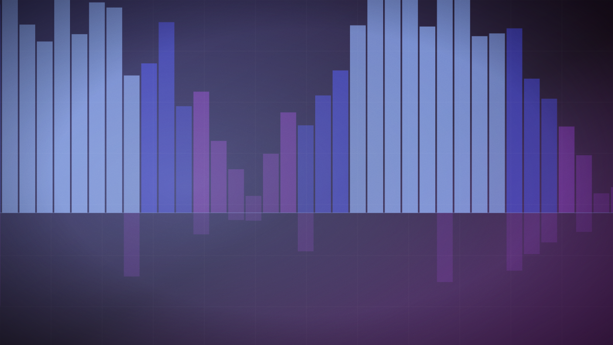

OpenAI pauses work on Astra after tests flag possible critical cyber capability
The company says it cannot rule out that an unreleased model crosses its Preparedness Framework threshold for cybersecurity, and has halted internal work that does not meet new controls.

Original cover art, generated for this story. THE VISSION does not republish third-party press imagery.
- Preliminary evaluations found advances in agentic coding and cyber operations strong enough that OpenAI cannot rule out the critical capability level.
- Internal Astra activity failing the strengthened requirements has stopped, with sandboxed execution, restricted network access and weight encryption added.
- OpenAI stresses the assessment is preliminary and that Astra has not been formally classified as a critical cybersecurity model.
- The company says it will seek evaluations from government agencies and independent safety organisations before any deployment.
OpenAI disclosed in early August that internal evaluations of Astra, an unreleased model, showed enough capability in agentic coding and cybersecurity that the company could not rule out the critical threshold in its Preparedness Framework. In its own words, quoted by Help Net Security: preliminary evaluations indicate strong enough performance that it cannot rule out the critical capability level at this time.
The practical consequence is a stop order on parts of its own research programme. Internal Astra activities that do not meet strengthened security requirements have been halted. The controls OpenAI describes adding — isolated testing environments, restricted network and tool access, additional encryption of model weights, expanded monitoring and sandboxed execution — read less like product hardening than like handling procedures for a hazardous material.
The caveat matters, and OpenAI is explicit about it. This is a preliminary assessment, Astra has not been formally classified as a critical cybersecurity model, and evaluation continues before a final determination. The company also says it will ask government agencies and independent safety organisations to run their own evaluations, and will give external testers guidance and security measures, before deployment.
What makes this notable is the direction of the decision rather than its scale. Preparedness frameworks have been published by several labs for two years. This is the first time one has visibly stopped work at a lab rather than shaping the wording of a release note after the fact.
The counter-reading is that a preliminary, self-assessed, self-published threshold with no external audit is a weak instrument, and that announcing a pause on cyber grounds is also a capability claim with commercial value. Both readings can be true at once.
A threshold only means something if crossing it costs the lab something. This is the first public instance of a frontier developer halting its own work on cybersecurity grounds, which makes it the first real test of whether these frameworks bind. Whether it holds depends on what happens at the final determination, when the incentive to find Astra sub-critical will be considerably stronger than it is now.